01
Black & grey
Levensechte portretten en dieren, met zachte schaduwen en veel oog voor precisie. Een gezicht moet kloppen, tot in de rimpels rond de ogen.
Wally zet black and grey, portretten, mandala's en fineline in zijn eigen privéstudio. Geen drukke shop of wachtrij, wel rust, een eerlijke uitleg en een ontwerp dat jullie samen uitwerken.
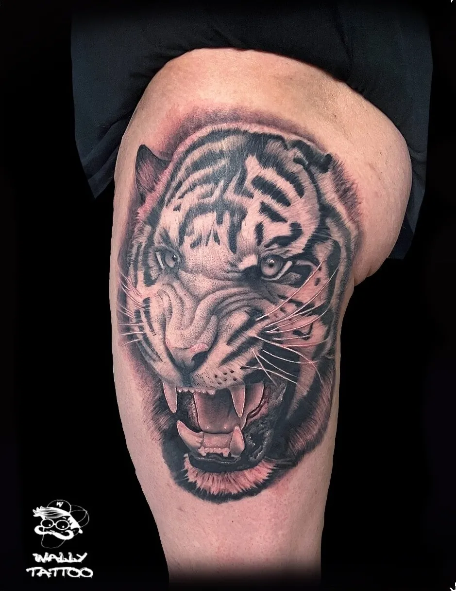
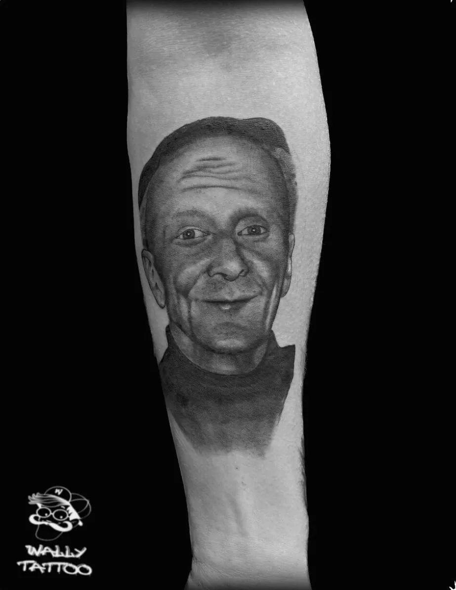
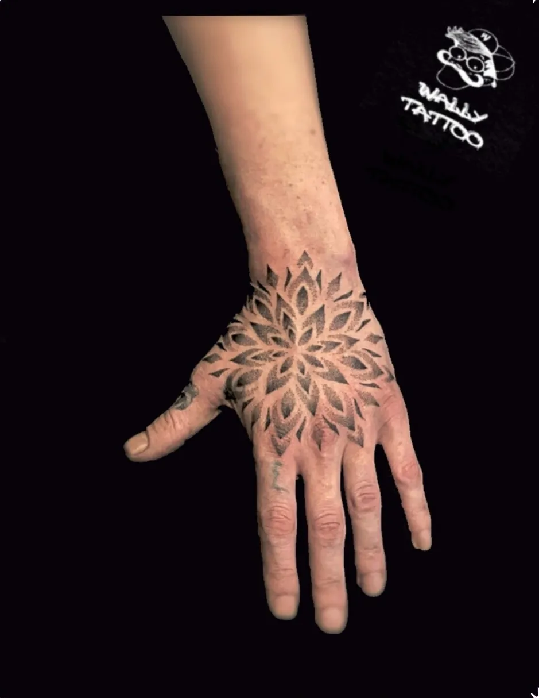
Elk stuk wordt op maat getekend. Breng je eigen idee mee, een foto die je raakt of gewoon een gevoel. De rest zoeken jullie samen uit.
Levensechte portretten en dieren, met zachte schaduwen en veel oog voor precisie. Een gezicht moet kloppen, tot in de rimpels rond de ogen.
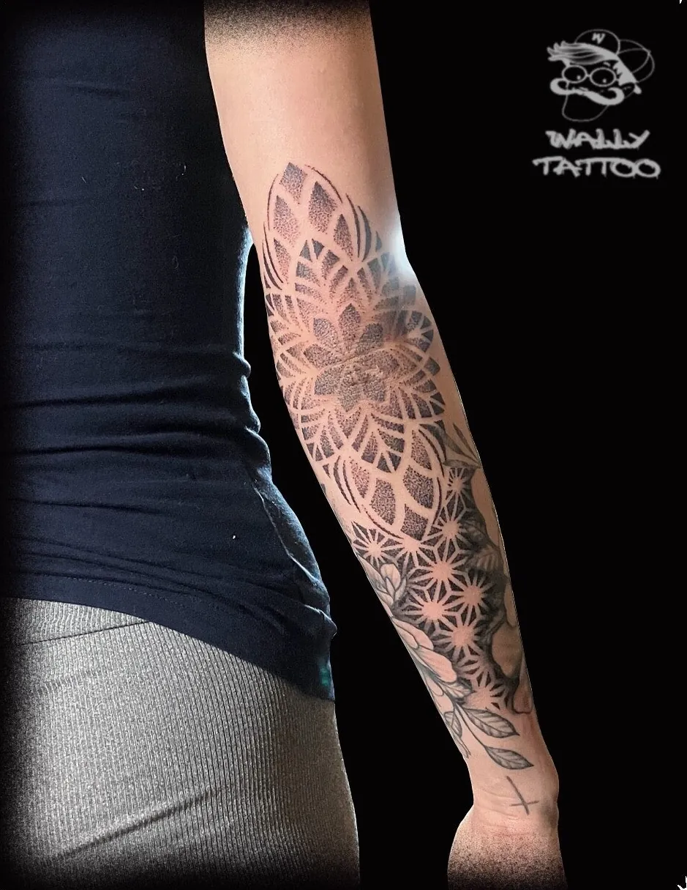
Symmetrie en patronen die de lijn van je arm, hand of hals volgen. Van één klein motief tot een volledige onderarm.
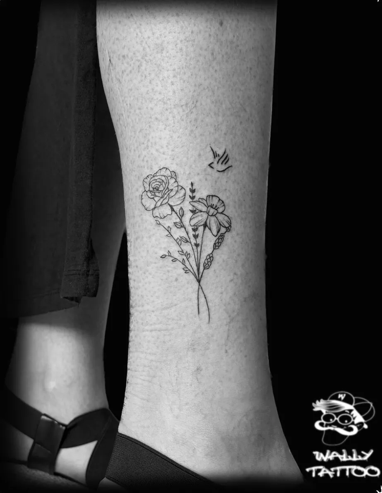
Fijne, verfijnde lijntjes voor wie het klein en elegant wil houden. Bloemen, een datum, een naam.
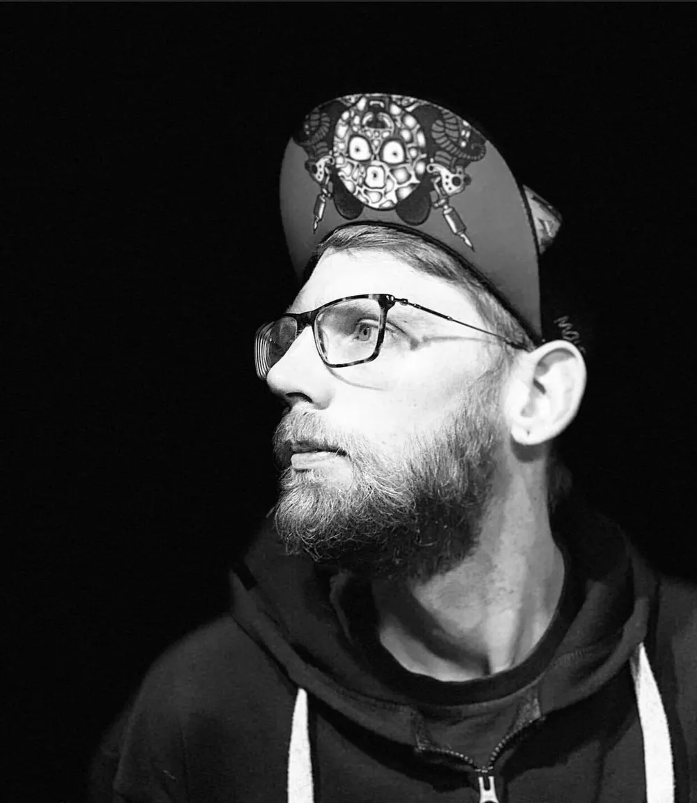
Waldo, voor iedereen gewoon Wally, leerde het vak als leerling bij Tattoo Mays in Gent. Tekenen en tatoeëren begon als hobby. Het groeide, stap voor stap, tot een eigen privéstudio.
Die start zie je nog altijd terug: geen lopende band, wel custom ontwerpen, cover-ups en fineline, helemaal afgestemd op wie er in de stoel zit. Je wordt gerustgesteld, er wordt naar je geluisterd en je gaat naar huis met duidelijke uitleg over de nazorg.
Wat startte als een hobby, groeide door de jaren heen. De liefde voor het vak bleef de basis.
Custom stukken, cover-ups en flash, rechtstreeks uit de privéstudio.
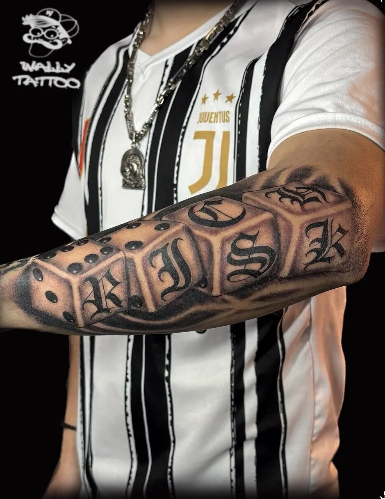
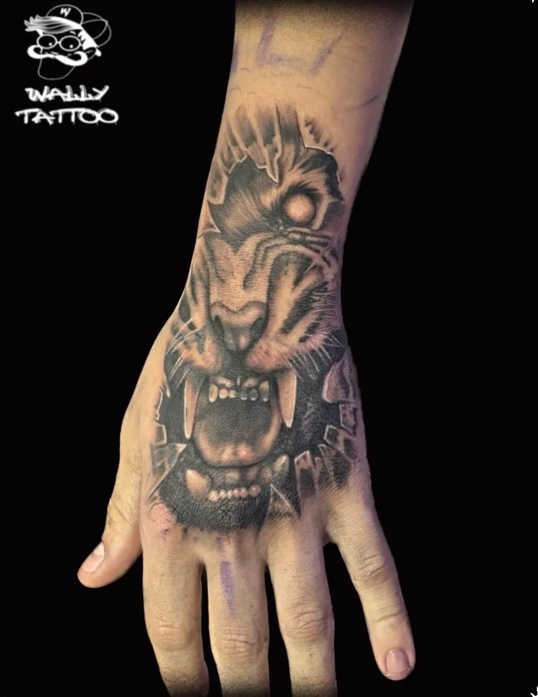
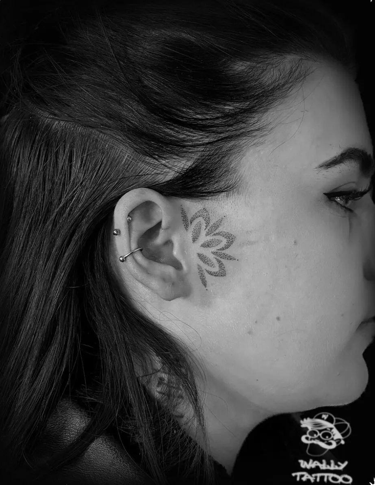
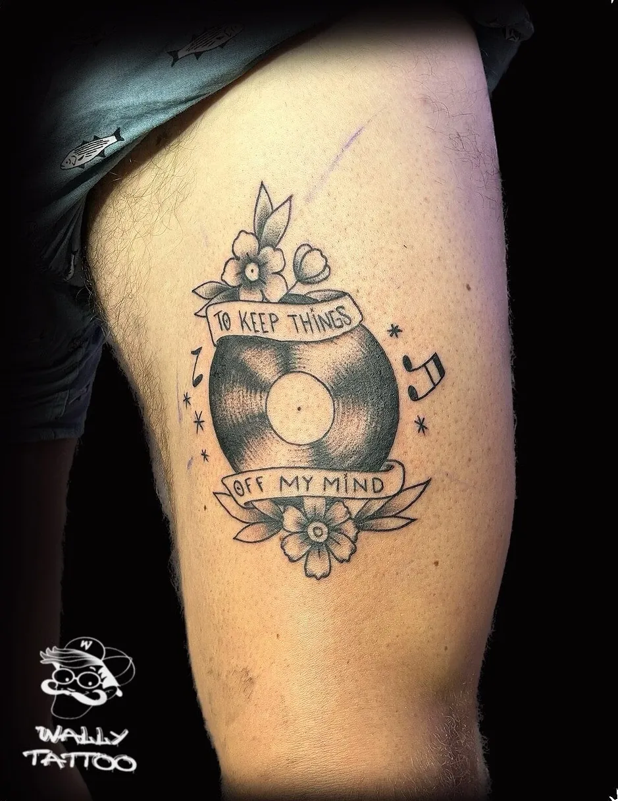
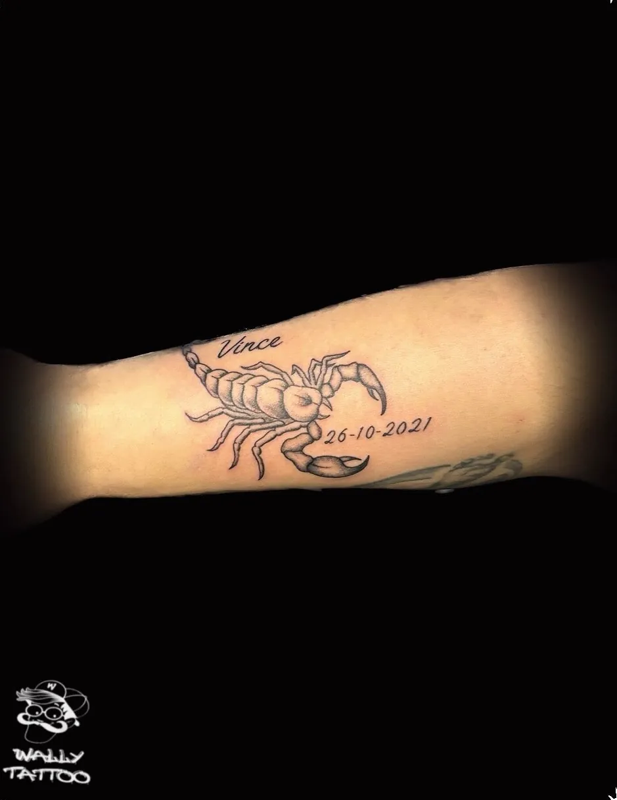
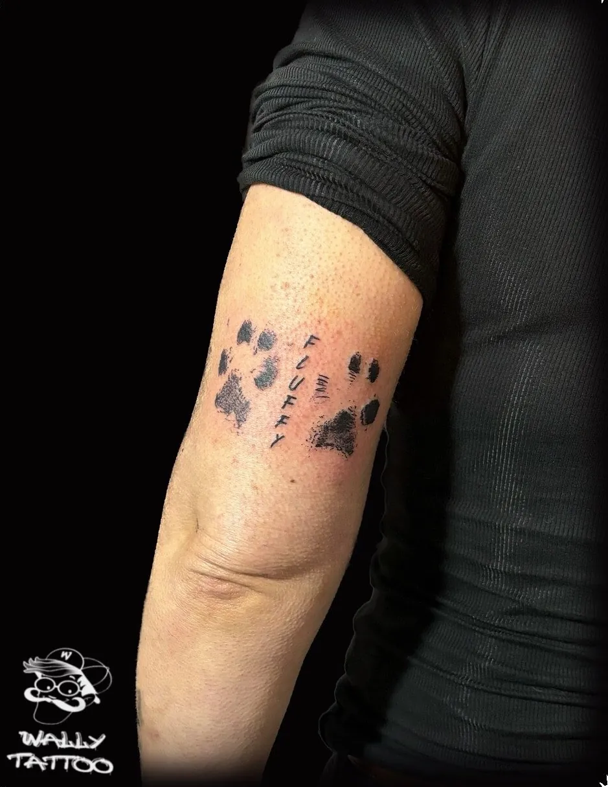
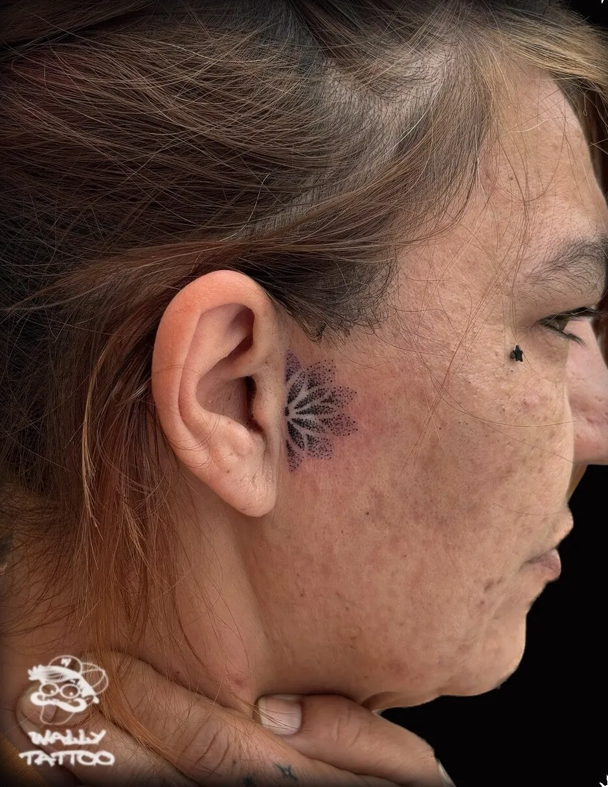
Nog meer custom stukken en cover-ups? Die vind je op Instagram en TikTok.
@wallytattoo8Je hoeft niet alles al uitgedacht te hebben. Een eerste berichtje is genoeg om te starten.
Via WhatsApp, mail of het formulier. Een foto als inspiratie, de plek op je lichaam en hoe groot je het ziet, dat helpt al veel.
Jullie bespreken het ontwerp en de plaatsing tot het goed voelt. Twijfel je nog, vraag dan een gratis consult.
In alle rust in de privéstudio. Een sessie duurt gemiddeld 2 tot 4 uur. Daarna krijg je duidelijke instructies voor de verzorging.
Voor een exacte prijs van jouw tattoo stuur je gewoon een berichtje of vraag je een gratis consult aan.
★★★★★"Zeer tevreden over de reeds 2 geplaatste stukken van mijn floral sleeve! Je wordt gerustgesteld, er word naar u geluisterd en samen naar een mooi ontwerp gewerkt."
Joyce LamonGoogle review
★★★★★"Altijd super blij met al de tattoo's dat ik al laten zetten heb. Mijn cover van mijn tattoo is ook super goed gedaan!"
Cassandra LebonGoogle review
★★★★★"Super tevreden over wallytattoo van uitleg tot het zetten."
mehuys torinoGoogle review
Iedereen ervaart het anders. Het kan ongemakkelijk zijn, maar Wally doet er alles aan om je op je gemak te stellen.
Dat hangt af van grootte en ontwerp. Een kleine tattoo is soms in een uurtje klaar, grotere stukken vragen meerdere sessies.
Ja. Vermijd wel lang weken en gebruik geen heet water rechtstreeks op de tattoo.
Vaak wel. Stuur een foto van je huidige tattoo mee, dan kijkt Wally wat er mogelijk is.
Stuur je idee door en je hoort snel iets terug. Ook voor vragen of een gratis consult.
Ik maakte deze demo voor jullie om te tonen wat er kan. Na een kort gesprek maak ik er iets veel persoonlijkers van, helemaal naar jullie wens.
Vrijblijvend. Ik kom langs of we bellen.
Op maat, op jullie eigen domein.
Geen voorschot. Jullie betalen pas als alles klaar is.
Hosting, domeinnaam en kleine wijzigingen, zoals nieuwe openingsuren.
Omdat een voorbeeld meer zegt dan een mail. Zo zien jullie meteen wat er kan, en het kost jullie niets.
Nee. Het gesprek is vrijblijvend. Vinden jullie het niks, dan is het daarmee gedaan.
Na ons gesprek staat jullie site binnen 10 tot 14 dagen online.
Zeker. Jullie domeinnaam kan gewoon blijven, de nieuwe site komt in de plaats van de oude.
Nee, dat doe ik op basis van ons gesprek. Eigen foto's zijn mooi meegenomen, maar niet nodig om te starten.